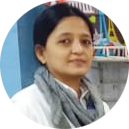

About Me

Renu Raniwala - Profile
25 YEARS DOWN THE LANE
I started my journey in 1994 when my dad was serious and I was pregnant. Drs insisted me to do something what I am fond of as to keep my mind occupied otherwise I would loose the baby. I started all then with the support of My husband Atul Raniwala. My creation name came with my Son's (Reet) 1st birthday party theme which was "Sweet Heart", hence the name Sweet Heart Creations. We are pioneers in India since 1994 and specialise in personalisation and customisation of gifts. Our product range has bedsheets with pictures, quotes, towels with the Name and meaning of the Name all printed. Your sun sign, you are born under can also be personalized on pouches & wallets. We customise Diwali and wedding gifts too. We believe in delivering quality and trust.
I started my journey in 1994 when my dad was serious and I was pregnant. Drs insisted me to do something what I am fond of as to keep my mind occupied otherwise I would loose the baby. I started all then with the support of My husband Atul Raniwala. My creation name came with my Son's (Reet) 1st birthday party theme which was "Sweet Heart", hence the name Sweet Heart Creations. We are pioneers in India since 1994 and specialise in personalisation and customisation of gifts. Our product range has bedsheets with pictures, quotes, towels with the Name and meaning of the Name all printed. Your sun sign, you are born under can also be personalized on pouches & wallets. We customise Diwali and wedding gifts too. We believe in delivering quality and trust.